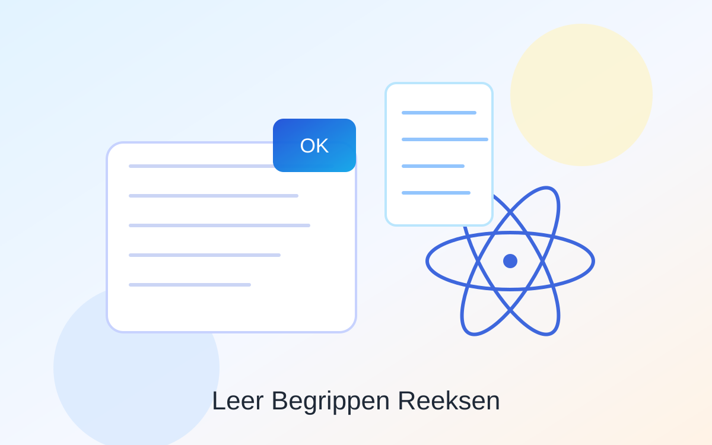
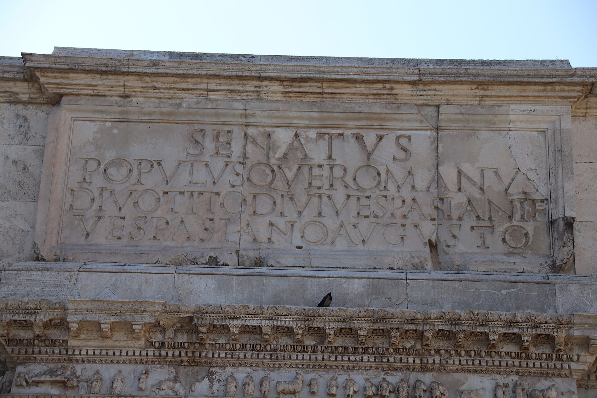

Koningskind
Een studiegids voor leerlingen – het verhaal van Lydia, Zissel en koning Salomo. Ontdek het onbekende verhaal achter het beroemde Salomonsoordeel.

Leer Begrippen Reeksen
Oefen begrippen uit verschillende reeksen met slimme vraagvormen, voortgangscontrole en flexibele antwoorden.
Werkwoordspelling Oefenen
53 vragen over werkwoordvormen: tegenwoordige tijd, verleden tijd en voltooid deelwoord.
Vocabtrainer
Oefen woordenschat met transliteratie, slimme herhaling en je eigen tempo.
Grieks woordenlijst (print)
Alle Griekse woorden uit les 2 t/m 19 op één printbaar overzichtsblad.

Latijnse grammatica
Betrekkelijke bijzin, ACI, infinitieven en voornaamwoorden in een compact overzicht met een snelle stamp-pagina.

Hektor & Andromache
Hektor kiest Legacy boven Safety, Andromache heeft mega verlatingsangst door Achilles, en de baby is bang voor helmen. 🛡️👶😭

Hannibal: de eed
Eerst de nette vertaling van Tekst 29, daarna de Gen Z remix: Spanje als power-up plan en Hannibal die al op negenjarige leeftijd Rome op de hitlist zet.